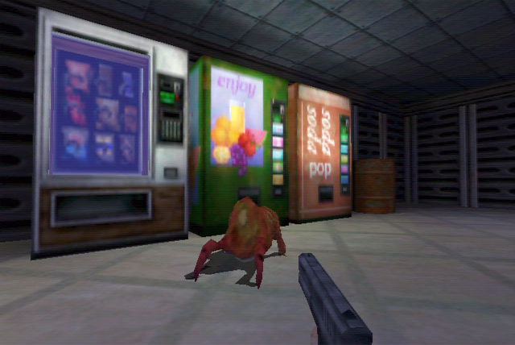
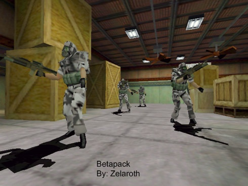

I’ve noticed some of you are using HL: Source as a way of getting around certain ideas, but HL: Source is just a port of HL1 into the source engine, it wasn’t made from the source engine, so most ideas are still plausible. I still can’t think of anything else though…
Uh :facepalm: not this again
:hmph:
:facepalm:
Yes, it is a port, but it’s still being run on the SOURCE engine, hence the Source engine IS capable of creating those effects.
Rising water is completely capable of being done in Source Engine, both Half Life: Source and the mod Drowned World will support claim, however it does take a huge chunk out of your framerate when it happens.
I know that Source has problems rendering water from the side, but I don’t know if goldSource doesn’t have problems doing that or not.
There apparently is, the rising water puzzle in the unforeseen consequences chapter of HL: S used real time reflective water.
Edit: Oh my, I missed a page…
Bahahaha, you can’t be serious. 
So much :facepalm:
I think an early version of goldsrc had dynamic shadows but not the final version.


Ha, yeah I remember the old promo shots for HL1 and OP4 had dynamic shadows. Why did Valve remove them?
People, people, PEOPLE! Does nobody remember the one thing Goldsource had over source?
Different materials with models!
Like the fences in source, even the metal posts make the chainlink sound, or the train windshields which are made of metal, ect.
Unless the devs are fixing this (Valve couldn’t/hasn’t) we won’t get “metal” helmets, they’ll be made of the flesh material, like the hgrunts in HL:S- it’s easier to kill them with headshots than in HL, because they don’t have helmets cabable of reflecting half the bullets that hit them. Same goes for the Agrunts, whose armour was their biggest asset.
Correct me if i’m wrong but afaik most of the models in HL were made up of brushes. So if there was a chain link fence in HL the metal posts would be a different brush to the fence itself, using different materials with different attributes. and maybe they scripted the Hgrunts and Agrunts in such a way that if shot in armored areas less damage is done?
You cannot change your player model’s color, like in HLDM
This makes me sad everytime I remember it :[
Models and brushes are completely different things. :hmph:
I was really just using those as an example on how the models in source can’t have different material attributes on the same mesh.
Dammage levels can be done with hitboxes, but HL: S does not have the metal bullet reflection, AFAIK. Because it can’t be done with the same mesh.
Also, because I’m sure someone is going to argue that they’ve had (expensive, eg. spawned by a level designer at the beggining of the map or made with a vehicle kill) metrocop ragdolls with plastic helmets and the rest of the body is not plastic, two things:
- The plastic sounds and blood not appearing only happens when it’s a corpse, not on the live NPC.
- I think they’re separate meshes on the same model, because the modeling program valve used doesn’t support multiple textures on the same mesh.
I REMEMBER WHAT IT IS!
At least what it sort of is.
It’s the Barnacles. In goldsource it was possible to shoot a barnacle that was dragging someone up and still save them. In Source, they get turned into a ragdoll immediately so even if you shoot the barnacle, they’ll still be dead.
The only issue is that IS possible to do that in Source. It’s just not convenient. It would require the Barnacles to be completely redone, as well as doing a “getting dragged up by barnacle” animation for every creature.
Play Route Canal.
Am I the only one thinking of that huge fan in Blast Pit? I can’t recall seeing anything like that in other Source games…
I dont know if this is a big thing, but it sure as hell isnt in source. Explosives in gold source exploaded enemies into gibs. That’s in source. What isnt, is that bodies in gold source, when in contact with explosives, where gib’d too. In source, it just shoots ragdolls into the air, not exploading them. Is that it?
In hl1 you type impulse 102 you shoot different gibs every time but in hl2 only a skull.
It’s completely possible on the Source engine.
Not healing soda cans :3
Naw, giant spinning fans are way too intense for Source.